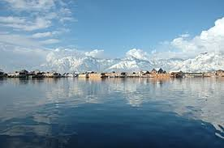
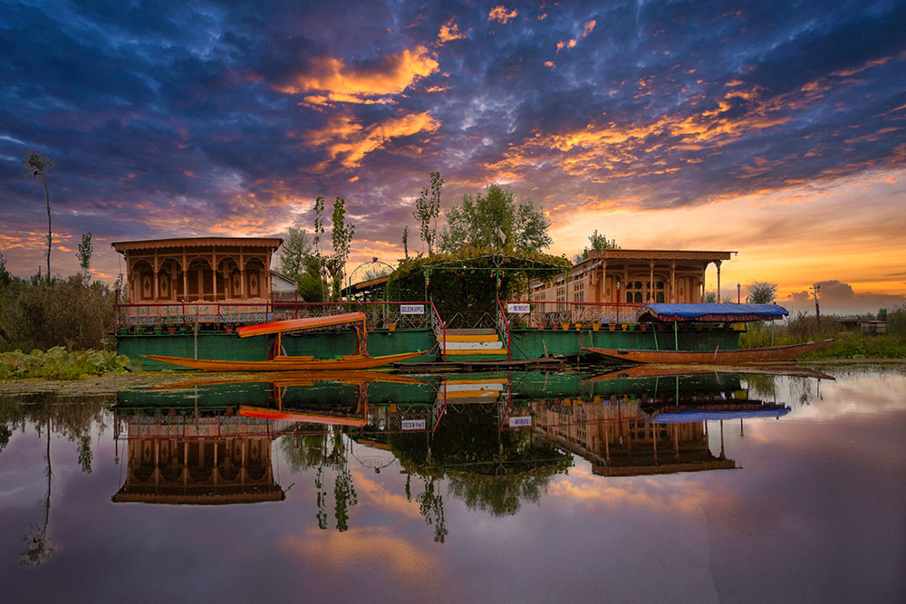
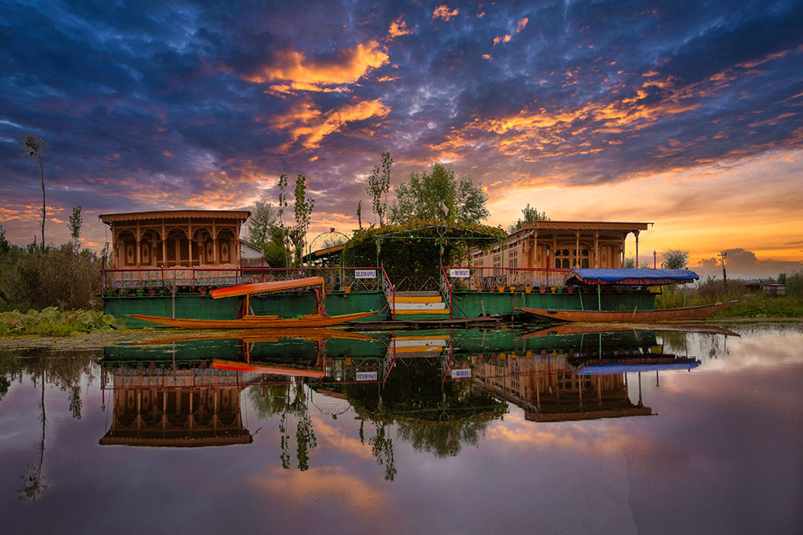
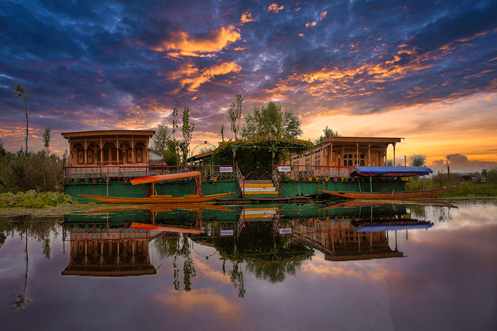
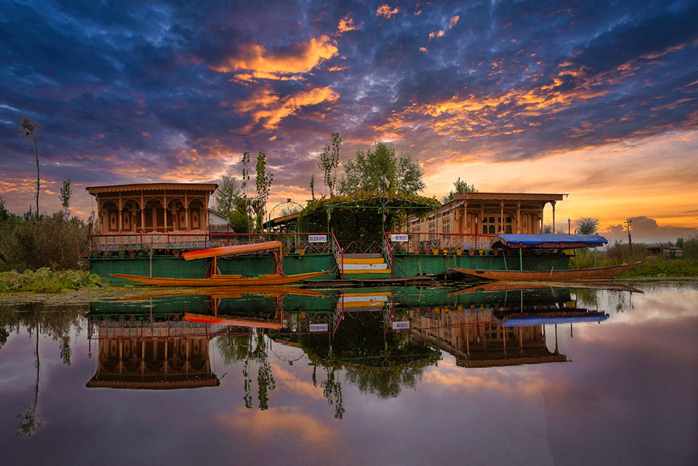

 


"Srinagar is the summer capital of Jammu and Kashmir, an Indian-administered union territory. It's known for its natural environment, gardens, waterfronts, and houseboats. Srinagar is also famous for its traditional Kashmiri handicrafts, such as papier-mache, wood carving, carpet weaving, and jewel making. Picturesque and enchanting, Srinagar is cradled high in the lofty green Himalayas and hailed all over the world for its incredible natural beauty. Surrounded by mountain peaks, lush green valleys, glistening lakes, temples and spectacular Mughal-era gardens, the city has inspired poets through centuries."

Reckoned to be the pride of Kashmir tourism, Dal Lake is the most popular attraction in Srinagar. Enclosed by splendid Pir Panjal mountains and Mughal Gardens, this must-see place is ideal for family vacationers, honeymoon couples, and even for solo travellers seeking peace.
Dal Lake is also one of the best locations in Kashmir for film shooting as it offers some incredible vistas of lofty rolling hills, the distant snow-capped mountains, shikaras cruising quietly and the houseboat standing still with the perfect poise.
The canopied Shikaras sailing on the lake are one of the major attractions of Dal Lake. The houseboats on the lake are also the top attraction as the best accommodation option in Srinagar to the tourists.

Pari Mahal or The Angels’ Abode is a seven terraced garden located at the top of Zabarwan mountain range over-looking city of Srinagar and south-west of Dal Lake The architecture depicts an example of Islamic architecture and patronage of art during the reign of the then Mughal Emperor Shah Jahan.
The Pari Mahal was built by Mughal Prince Dara Shikoh in the mid-1600s. It served as a library and an abode for him. Dara Shikoh was said to have lived in this area in the years 1640, 1645, and 1654.
It was further used as an observatory, useful for teaching astrology and astronomy. It is five-minute drive from Cheshmashahi Garden.
Chashma Shahi or Chashma i Shahi (translation: the royal spring), also called Chashma Shahi, is one of the Mughal gardens built in 1632 AD around a spring by Ali Mardan Khan, a governor of Mughal emperor Shah Jahan as per the orders of the Emperor, as a gift for his elder son Prince Dara Shikoh. The garden is located in the Zabarwan Range, near Raj Bhawan (Governor‘s house) overlooking Dal Lake in Srinagar, Kashmir.
The garden presents Mughal architecture as used in different Mughal gardens. The artistically build garden has Iranian influence in its art and architecture and the design is based on the Persian gardens.
The topography and the steepness of the land have led the formation of the garden. The main focus of the garden is the spring which flows down in terraces

The Shankaracharya Temple or Jyeshteshwara Temple is a Hindu temple situated on top of the Shankaracharya Hill on the Zabarwan Range in Srinagar in the Indian union territory of Jammu and Kashmir. It is dedicated to the Hindu god, Shiva. The temple is at a height of 1,000 feet (300 m) above the valley floor and overlooks the city of Srinagar.
On festivals such as Herath, as Maha Shivaratri is known as in the region, the temple is visited by Kashmiri Hindus.
The temple and adjacent land is a Monument of National Importance, centrally protected under the Archaeological Survey of India.[2][3] Dharmarth Trust has managed the temple since the 19th century, along with others in the region.[4] Karan Singh is the sole chairperson trustee.
Wular Lake was also called Mahapadmasar. Nilamata Purana also mentions it as Mahapadmasaras. The lake, with its big dimensions and the extent of water, gives rise to high leaping waves in the afternoons, called Ullola in Sanskrit, meaning "stormy leaping, high rising waves". Therefore, it was also called Ullola.
It is believed to have gotten corrupted over the centuries to Wulor or Wular.
The origin may also be attributed to a Kashmiri word 'Wul', which means a gap or a fissure, appellation that must have come also during this period.
"Srinagar - Essence of Passion, Gorgeous Nature and Beautiful ...Srinagar is known for its natural beauty, including its lakes, gardens, and waterfronts. The city is located in the Kashmir Valley, on the banks of the Jhelum River and the shores of Dal and Anchar Lakes.Despite so many changes over the years, the gardens still manage to appeal to tourists from all over the world. Each park has its entrance and there is a small admissions fee at each gate. I would recommend spending at least one hour in each garden."
December–February is the best time to visit.
If you want to see snow and can tolerate low temperatures.
Dal Lake Take a morning stroll around Dal Lake
Pack heavy woolens, sweaters, scarves, shoes, basic medicine, and an umbrella.
Cannot describe such a unique experience.
We can go on Sledging,Skiing,Scooter rides and many such adventurous rides there which is worth exploring.
Great experience.Loved it